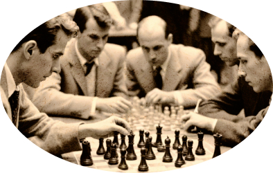

Чтобы поддержать Международный васюкинский турнир посетите лекцию на тему: «Плодотворная дебютная идея»
Чтобы поддержать Международный васюкинский турнир
посетите лекцию на тему: «Плодотворная дебютная идея»
и Сеанс одновременной игры в шахматы на 160 досках гроссмейстера О. Бендера
- Место проведения:
- Клуб «Картонажник»
- Дата и время мероприятия:
- 22 июня 1927 г. в 18:00
- Стоимость входных билетов:
- 20 коп.
- Плата за игру:
- 50 коп.
- Взнос на телеграммы:
100 руб.21 руб. 16 коп.
По всем вопросам обращаться в администрацию к К. Михельсону
Этапы преображения Васюков Будущие источники обогащения васюкинцев
-
Строительство железнодорожной магистрали Москва-Васюки
-
Открытие фешенебельной гостиницы «Проходная пешка» и других небоскрёбов
-
Поднятие сельского хозяйства в радиусе на тысячу километров: производство овощей, фруктов, икры, шоколадных конфет
-
Строительство дворца для турнира
-
Размещение гаражей для гостевого автотранспорта
-
Постройка сверхмощной радиостанции для передачи всему миру
-
Создание аэропорта «Большие Васюки» с регулярным отправлением почтовых самолётов и дирижаблей во все концы света, включая Лос-Анжелос и Мельбурн